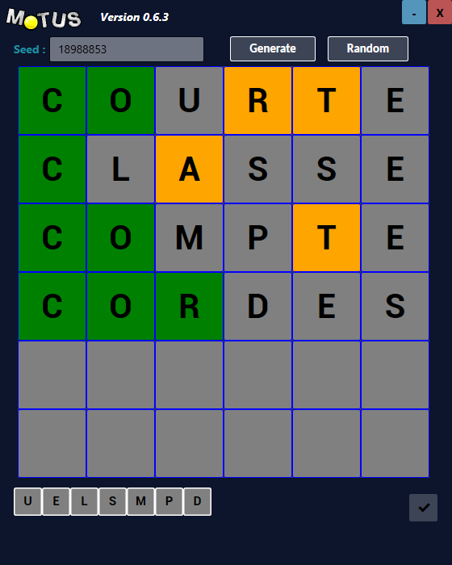
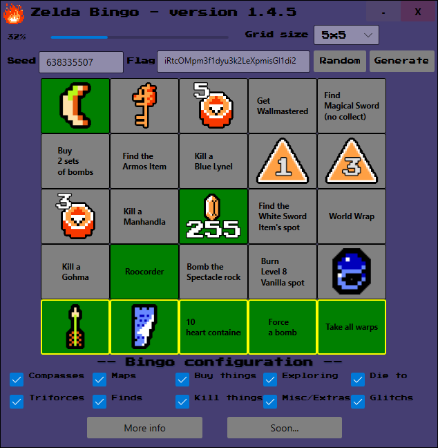

A propos
Ce site a été réalisé par Aurélien Plateaux pour un projet de seconde année de DUT Informatique
Autres projets
Application Motus - C# WPF 
Une application qui reproduit le concept du Motus (l'ancienne émission culte sur France 2), créee durant la grande vague de popularité des concepts tels que le Worlde.
Zelda 1 Bingo - C# WPF 
Ceci est un bingo consituant des "challenges" dans chaque case pour le jeu "The Legend of Zelda" sorti sur NES en 1986. Le but est de terminer l'intégralité des cases pour compléter l'entièreté de la grise. Il est possible de configurer certains paramètres pour rendre le jeu différent. L'application est uniquement en anglais étant donné qu'elle est destiné à la communauté internationale du jeu.